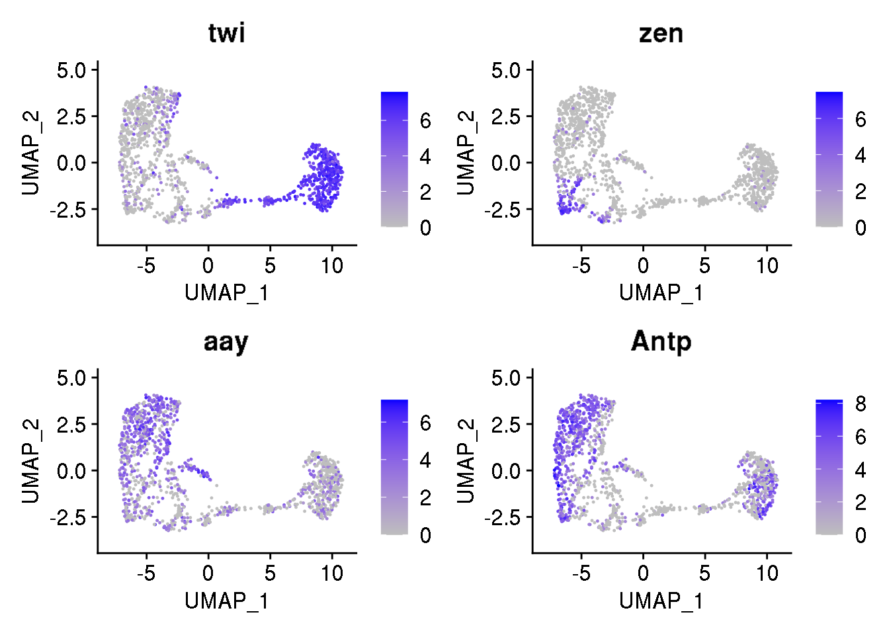

2 Basic vizualization
In this section, we will perfome some basic analyses of the dataset provided in Nitizan et al. using Seurat. We will group cells in clusters and visualise the group using UMAP. A quick analysis of the cluster to identfy Project Check if clusters of cells found in step 1 TO COMPLETE If you are not familiar with Seurat object and scRNAseq pre-processing, you can look at yesterday’s tutorial, which is available on github.
2.1 Import data in Seurat
library(Seurat)## Warning: package 'Seurat' was built under R version 4.0.2We import the log-normalized high quality cells as a dataframe and then convert the dataframe to a Seurat object.
log.nrmlz.matrix <- read.table("data/data_day2/drosophila_scRNAseq/dge_normalized.txt", sep='\t', row.names=1)
dim(log.nrmlz.matrix)## [1] 1963 1297print(log.nrmlz.matrix[1:3,1:4])## GTACTAATTACN_2 AGGCTAATGGAC_3 TAGACAAAAGCT_4 TCTACTAGTGTN_5
## 128up 2.570 2.509 0.000 0.000
## 140up 1.160 3.007 0.000 0.000
## 14-3-3epsilon 8.838 8.788 8.843 8.869We have 1963 genes and 1297 cells
dataset <- CreateSeuratObject(counts = log.nrmlz.matrix)2.2 A quick reminder on SeuratObject
In Seurat, data are organised in different compartements (slots), which contains them-selves several compartements, which can them-selves contain sub compartments…
slotNames(dataset)## [1] "assays" "meta.data" "active.assay" "active.ident" "graphs"
## [6] "neighbors" "reductions" "images" "project.name" "misc"
## [11] "version" "commands" "tools"Each compartment can be used to store:
- data from multiple modalities, such as RNAseq (slot
assays, sub-slotRNA), ATAC-seq… - results of analyses: dimension reduction, clustering …
- etc.
You navigate through this hierarchy using @ and $ signs.
slotNames(dataset@assays$RNA)## [1] "counts" "data" "scale.data" "key"
## [5] "assay.orig" "var.features" "meta.features" "misc"The structure of the Seurat object reflects the pre-processing steps. The scRNAseq workflow consists of 3 main steps :
* start with raw expression matrix (UMIs after sequencing) and filter out “low quality cells” : data are stored in the compartement counts;
* log-normalize the data: to correct for sequencing biais : data
* perform a dimension reduction such as PCA to reduce the computation time and unnecessary information. PCA requires the data to normalized and scaled : scale.data.
2.3 Perform dimension reductions
When analysing scRNAseq data, you will usually perform some clustering to identify sub-populations and use some technique for visualization (e.g. UMAP). These analyses are performed on a lower dimensional space. Here we perform a PCA on the list of highly variable genes provided by the authors.
list_hvg = read.csv("data/data_day2/drosophila_scRNAseq/high_var_genes.txt", header=FALSE)
# the list of gene was imported as a dataframe, we can convert it to a list
dataset@assays$RNA@var.features = as.list(list_hvg$V1)dataset <- ScaleData(dataset)
dataset <- RunPCA(dataset, features = list_hvg$V1)DimPlot(dataset, reduction = "pca")
sum(dataset@reductions$pca@stdev[1:35])## [1] 49.57188nPC = 35 # number of PC kept for the analysis
n.neighbours = 15
resol = 0.4 # impact the number of clusters
# k-nn graoh
dataset <- FindNeighbors(dataset, k.param = n.neighbours,dims = 1:nPC) ## Computing nearest neighbor graph## Computing SNN# make the clusters
dataset <- FindClusters(dataset, resolution = resol) ## Modularity Optimizer version 1.3.0 by Ludo Waltman and Nees Jan van Eck
##
## Number of nodes: 1297
## Number of edges: 52276
##
## Running Louvain algorithm...
## Maximum modularity in 10 random starts: 0.8298
## Number of communities: 6
## Elapsed time: 0 secondsdataset <- RunUMAP(dataset, dims = 1:nPC)## Warning: The default method for RunUMAP has changed from calling Python UMAP via reticulate to the R-native UWOT using the cosine metric
## To use Python UMAP via reticulate, set umap.method to 'umap-learn' and metric to 'correlation'
## This message will be shown once per session## 09:57:59 UMAP embedding parameters a = 0.9922 b = 1.112## 09:57:59 Read 1297 rows and found 35 numeric columns## 09:57:59 Using Annoy for neighbor search, n_neighbors = 30## 09:57:59 Building Annoy index with metric = cosine, n_trees = 50## 0% 10 20 30 40 50 60 70 80 90 100%## [----|----|----|----|----|----|----|----|----|----|## **************************************************|
## 09:57:59 Writing NN index file to temp file /var/folders/nq/w_bhlnvs51gdyprd_bk_h0vm0000gp/T//RtmpZZkhqx/filefee07d56a15e
## 09:57:59 Searching Annoy index using 1 thread, search_k = 3000
## 09:57:59 Annoy recall = 100%
## 09:57:59 Commencing smooth kNN distance calibration using 1 thread
## 09:58:00 Initializing from normalized Laplacian + noise
## 09:58:00 Commencing optimization for 500 epochs, with 50698 positive edges
## 09:58:01 Optimization finishedDimPlot(dataset, reduction = "umap")
# Select other genes
#FeaturePlot(object = dataset,
# features = c('ftz','ImpE2','sim'),
# cols = c("grey", "blue"),
# reduction = "umap")
FeaturePlot(object = dataset,
features = c('twi','zen','aay'),
cols = c("grey", "blue"),
reduction = "umap",
pt.size = 0.2)